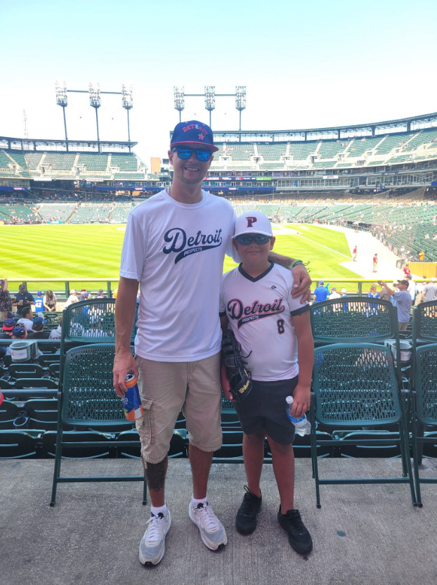

"CamBam" · Detroit, Michigan
Class of 2032 · #8 · Switch-Hitter
1B · 3B · SS · P · OF — Detroit Prospects
A young utility player with a big-league dream and the work ethic to chase it.
Detroit Prospects
Camron and the Detroit Prospects brought home the hardware in 2026 — one milestone on a long road ahead.

#8 · Detroit ProspectsThe Player
Camron "CamBam" Finlay is a 12-year-old switch-hitting infielder from the Detroit area with a big-league dream and the discipline to chase it. A true five-position utility player — first base, third base, shortstop, pitcher, and the outfield — Camron gives a coaching staff a Swiss-army-knife option almost anywhere on the diamond.
He plays travel ball for the Detroit Prospects, where in 2026 his team captured a tournament championship. Switch-hitting from both sides of the plate and comfortable all over the field, he profiles as the kind of versatile, coachable player who keeps finding ways to help his team win.
Off the field, teammates, parents, and coaches know him as respectful, kind, and endlessly enthusiastic about the game. He is Class of 2032 — just getting started, with his sights set on college baseball and, one day, the pros.
View Perfect Game Profile ↗By the Numbers
Live season numbers, kept current by the family.
On the Diamond
Synced from the team calendar. Recruiters welcome at any game.
For College & Pro Scouts
Interested in Camron for your program, camp, showcase, or scouting list? Reach out and Ryan Finlay (Camron's dad) will follow up with film, schedule, and measurables.